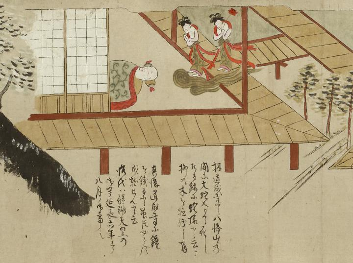

夢；ユメ，清姫；キヨヒメ，安珍；アンチン

住持の夢に現れ、弔いの礼を述べる2人の天人の姿。安珍と清姫が変化した姿である。横たわり眠る住持の枕元に向かって、開け放された部屋と縁側の境界附近から、雲に乗った2人の天人が合掌している。両者とも髪を高く結い上げ、赤い羽衣のような布を首から長く垂らし、下半身には唐草模様の着物をつけている。向かって右側の天人は大きな赤い花を手にしている。画面は縁側の外から開いた障子ごしに部屋の中を描いている。前段の詞書には「其後道成寺は数多の僧侶を集めて弔らひければ扠有がたき御弔ひにより両人共天人となり又或夜住持の夢に見へけるは甚だ以て有がたき御弔らひにより安珍は中央天に生じ清姫は開率天に生ず有がたき御仕合せと御礼に参り手を合せ拝すと思へば住持の夢はさめにける」とある。
出典：親書誌：U426_nichibunken_0055：道成寺縁起；ドウジョウジエンギ／日付：2006／資源識別子：U426_nichibunken_0055_0009_0000
Copyright (c)2010- International Research Center for Japanese Studies, Kyoto, Japan. All rights reserved.